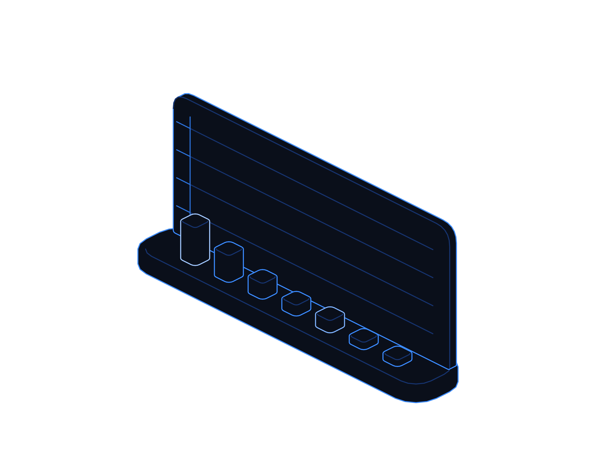

Make AI Pay


Hot topics · Playbook
No. 04 · November 2026
Hot topics · The AI value reckoning
Make AI
pay.
Spending on AI keeps climbing while proof of return lags. How to pick use cases that pay, prove them, keep agents in check and know when to stop.
Transputec playbooktransputec.com
Inside
Contents
A practical guide to the 2026 AI value reckoning: choosing use cases that pay, proving them, keeping agents under control and reporting value the board can trust. Numbered citations refer to the sources list in the companion report, The AI Reckoning.
Foreword03
Introduction04
01Find the value06
02Prove it safely11
03Run it and report it16
 Contents
ContentsMake AI Pay · Hot Topics · Playbook02 / 24
Foreword
The question has changed from what AI can do to what it has done for us.
Through 2026 the numbers have told two stories. Gartner expects worldwide AI spending of about $2.67 trillion this year, up by roughly half.2 Yet McKinsey's annual survey found the share of organisations reporting any profit impact from AI unchanged at 37%.3
Boards have noticed. So have finance teams, who are being asked to approve renewals, usage bills and agent projects with very little evidence to go on. At the same time, AI agents that act on their own have arrived in production, and with them a new kind of incident: the action that has to be reversed.
This playbook is about the practical response. It does not argue for less AI or more. It shows how to put AI investment on the same footing as any other: a measured starting point, a clear target, controls proportionate to the risk, honest reporting and the discipline to stop what does not pay.
The Transputec team
Transputec
Foreword Make AI Pay · Hot Topics · Playbook03 / 24
Introduction
Value is made in the workflow, not the licence.
The organisations reporting real returns from AI are not using secret models. They choose carefully, measure from day one and run AI like any other part of the business.
Choose for measurable value
Start where the outcome is already counted: cost per case, cycle time, error rates or revenue.
Control agents before they act
Approval points, full logging, a kill switch and a tested way to undo. Build them in, not on.
Report it like an investment
A baseline, a target, a running cost and a date to decide whether to scale or stop.
Introduction Make AI Pay · Hot Topics · Playbook04 / 24
If you cannot measure it before, you cannot claim it after.
Every AI initiative in this playbook starts with a baseline and ends with a decision.
Introduction Make AI Pay · Hot Topics · Playbook05 / 24
01
Part 01
Find the
value.
Pick the few use cases that can pay, and measure where you start.
01Why returns lag
02Choosing use cases
03Baselining
Part 01 Make AI Pay · Hot Topics · Playbook06 / 24
Find the value
Why so much AI spend has not paid back yet
Lots of small experiments feel like progress. A few measured use cases usually make the money.
Most organisations did not set out to waste money on AI. They bought licences because colleagues asked for them, ran pilots because vendors offered them and added AI features because their existing software included them. Each decision was reasonable. Together they rarely add up to a measurable result.
The evidence for that pattern is consistent. In McKinsey's 2026 survey, 80% of respondents said AI had improved their own productivity, but only 37% reported any effect on EBIT.3 Personal time saved does not become money unless the work around it changes.
Three habits cause most of the gap. The first is choosing use cases by enthusiasm rather than value, so effort spreads thinly across dozens of experiments. The second is skipping the baseline, so nobody can show what changed. The third is treating AI as a tool to roll out rather than a change to how a process runs.
Costs make it worse. Usage-based pricing means a pilot that is cheap at ten users can be expensive at a thousand. One in five McKinsey respondents already say running costs limit their use of AI.4
Agents add a further twist. An agent that books, refunds, updates or sends on its own can save far more effort than an assistant, but each wrong action has a cost, and that cost is often missing from the business case.
The fix is not a new strategy document. It is a short list of use cases, a measured starting point, a cost envelope and an agreed date to decide.
Find the value Make AI Pay · Hot Topics · Playbook07 / 24
Choosing use cases
Where AI is most likely to pay
Score each candidate on how measurable its value is and how ready the process and data are. Fund the top right first.
Fix first
Valuable, not ready
Clean the data or simplify the process before adding AI. Otherwise you automate the mess.
Fund now
Valuable and ready
High-volume, rules-heavy work with counted outcomes: service tickets, invoice queries, document intake, code review.
Drop
Unclear value, not ready
Interesting ideas with no owner, no data and no measure. Park them.
Allow, do not fund
Ready, value unclear
Personal productivity use within policy. Useful, but do not build a business case on it.
Readiness of process and data →
↑ Measurable value
Find the value Make AI Pay · Hot Topics · Playbook08 / 24
Baselining
Baseline before you build
Two to four weeks of measurement before a pilot saves months of argument afterwards.
01
Name the outcome in money or time
Cost per case, hours per report, days to close, error rate or conversion. One primary measure per use case.
02
Measure the current process
Take at least four weeks of real data from your systems, not estimates from a workshop.
03
Record the full cost today
Staff time, outsourcing, rework and software, so the AI case has a fair comparison.
04
Agree the target and the threshold
What improvement justifies scaling, and what result means stop. Write both down before the pilot starts.
05
Pick a control group
Where possible, keep one team or region on the old process so you can separate AI effects from other changes.
Remember
A baseline is the cheapest insurance you will buy in an AI programme.
Find the value Make AI Pay · Hot Topics · Playbook09 / 24
Measures that matter
What to measure for each kind of use case
Match the measure to the job. Activity counts such as logins or prompts are not value.
Use case type
Primary measure
Watch alongside
Service and support
Cost per resolved case; first contact resolution.
Customer satisfaction, escalations, reopened cases.
Document processing
Cases handled per person per day.
Error and exception rate, rework.
Software engineering
Lead time from change to production.
Defects found later, review load, security findings.
Sales and marketing
Conversion and revenue per rep or campaign.
Lead quality, brand and compliance issues.
Finance and back office
Days to close; cost per transaction.
Audit adjustments, control exceptions.
Agents acting on systems
Tasks completed without human rework.
Reversals, incidents, time to detect and undo.
Find the value Make AI Pay · Hot Topics · Playbook10 / 24
02
Part 02
Prove it
safely.
Pilots that answer a question, and agents that can be seen, stopped and undone.
01Pilot design
02Agent reliability controls
03Three worked examples
Part 02 Make AI Pay · Hot Topics · Playbook11 / 24
Pilot design
A pilot that ends in a decision
Most pilots fail by never finishing. Design each one to answer a single question in a fixed time.
Frame
One use case, one primary measure, one accountable owner and a written stop or scale threshold.
Scope
Limit users, data and systems. For agents, start read-only or draft-only before allowing actions.
Run
Eight to twelve weeks on real work, with the baseline and control group running in parallel.
Judge
Compare against the baseline, include full running costs and every incident or reversal.
Decide
Scale, fix and retest once, or stop. Record the decision and the reason.
A pilot without a stop threshold is not a pilot. It is an open-ended commitment.
Prove it safely Make AI Pay · Hot Topics · Playbook12 / 24
Agent reliability
Four controls every agent needs
Vendor surveys report many firms have reversed agent actions, and few can trace or stop agents automatically.6,10

01
Least privilege
Each agent runs under its own identity, with only the access its task needs.
02
Approval points
A person approves high-impact actions: payments, refunds, deletions and external messages.
03
Observability
Log every prompt, tool call and output against a case ID, so any action can be reconstructed.
04
Stop and rollback
A tested kill switch, reversible actions and backups for any data an agent can change.
Prove it safely Make AI Pay · Hot Topics · Playbook13 / 24
Agent controls in practice
What to put in place before an agent moves from drafting to doing.
This week
List every agent or automation that can act on a system. Record its identity, permissions and owner.
This month
Add approval points for high-impact actions and switch on full logging. Test the kill switch.
This quarter
Run a rollback drill: reverse a batch of agent actions and restore data within an agreed time.
Check
Can you answer, for any agent action, who or what did it, why, and how to undo it?
Owner
Head of IT, with each process owner
Bring this to the monthly review, with a date for each action.
Prove it safely Make AI Pay · Hot Topics · Playbook14 / 24
Worked examples
Three use cases, run properly
Customer service
Agent-drafted replies to billing queries
Baseline
Cost per resolved query and first contact resolution over six weeks.
Control
Agent drafts; staff approve every reply that issues refunds or credits.
Pay test
Scale if cost per query falls 20% with no drop in satisfaction.
Stop rule
Stop if escalations or reopened cases rise for two consecutive weeks.
Finance
Invoice intake and matching
Baseline
Invoices processed per person per day and exception rate.
Control
Agent matches and flags; humans approve payments. All actions logged.
Pay test
Scale if throughput rises and audit adjustments do not.
Stop rule
Stop if exceptions rise or running costs exceed the saving.
IT
Agent-assisted ticket triage and fixes
Baseline
Time to resolve and reopened tickets for common incidents.
Control
Read-only first; scripted fixes need approval and have a rollback.
Pay test
Scale if resolution time falls with no rise in change failures.
Stop rule
Stop if any untraceable change reaches production.
Prove it safely Make AI Pay · Hot Topics · Playbook15 / 24
03
Part 03
Run it,
report it.
Keep running costs in check, show the board what changed, and stop what does not pay.
01Cost control
02Reporting value
03When to stop
Part 03 Make AI Pay · Hot Topics · Playbook16 / 24
Cost control
Four ways to stop AI bills running away
Usage-based pricing rewards discipline. Set these up before you scale, not after the first invoice.
Budget per use case
Give each use case its own cost centre and monthly cap, so spend can be tied to outcomes.
Alerts and hard limits
Set usage alerts at 50%, 80% and 100% of budget, and hard limits on non-critical workloads.
Right-size the model
Use smaller, cheaper models for routine steps and reserve the largest for tasks that need them.
Review licences quarterly
Remove unused seats and overlapping tools. Bundled AI features are not free if nobody uses them.
KPMG found 61% of organisations review AI costs at approval but only 12% consistently assess value against cost.7 Do both.
Run it and report it Make AI Pay · Hot Topics · Playbook17 / 24
Reporting value
A one-page AI report for the board
Quarterly, one page, the same structure every time. Boards trust what they can compare.
Spend
Total AI spend by use case: licences, usage, people and partners.
Finance lead
Outcomes
Primary measure against baseline and target for each use case.
Process owners
Cost per outcome
Running cost divided by cases, hours or revenue affected. Trend over time.
Finance lead
Incidents
Agent reversals, errors that reached customers, data issues and near misses.
Head of IT
Decisions
What was scaled, fixed or stopped this quarter, and why.
Accountable executive
Run it and report it Make AI Pay · Hot Topics · Playbook18 / 24
When to stop
Five signs a use case should stop
Stopping is not failure. It is how budget moves to the things that work.
01
It missed its threshold by the agreed date
If the target was fair and the pilot ran properly, honour the rule you wrote at the start.
02
Running costs outgrow the benefit
Cost per outcome is flat or rising after the learning period.
03
It needs more checking than it saves
Staff spend as long reviewing outputs as they would doing the work.
04
You cannot trace or undo what it does
Any agent that cannot be observed, stopped and reversed stays out of production.
05
Nobody owns it
No named owner, no budget line, no measure. Close it and reassign the effort.
Run it and report it Make AI Pay · Hot Topics · Playbook19 / 24
Your plan
This week, this month, this quarter
A realistic sequence for a mid-sized UK organisation.
This week
List all AI spend, licences, pilots and agents. Name an owner for each.
Finance and IT
This week
Identify agents that can act on systems and check their permissions.
Head of IT
This month
Choose three use cases with measurable value and start baselining.
Executive sponsor
This month
Set cost caps and alerts on every usage-billed AI service.
Finance lead
This quarter
Run pilots to a stop or scale decision; stop at least one weak initiative.
Process owners
This quarter
Present the first one-page AI value report to the board.
Accountable executive
Run it and report it Make AI Pay · Hot Topics · Playbook20 / 24
Ask your suppliers
Questions for AI vendors and partners
Use these before you sign or renew.
Value and cost
?What measurable outcome have comparable customers achieved, against what baseline?
?How is usage billed, and what controls cap our spend?
?What happens to price as our usage grows?
Agents and control
?Can every agent action be logged, traced to a case and exported to our systems?
?How do we approve, pause and reverse agent actions?
?What access does the agent need, and can it be narrowed?
Run it and report it Make AI Pay · Hot Topics · Playbook21 / 24
Checklist
Is your AI investment set up to pay?
Tick what is true today. Anything blank is your next action.
Every AI initiative has a named owner
And a budget line.
Each funded use case has a baseline
Measured from real data.
Targets and stop rules are written down
Before the pilot starts.
Agents run with least privilege
Under their own identities.
High-impact agent actions need approval
Payments, deletions, external messages.
Agent activity is fully logged and traceable
And a kill switch has been tested.
Usage costs are capped and reviewed monthly
Per use case.
The board receives a quarterly value report
Including what was stopped.
Run it and report it Make AI Pay · Hot Topics · Playbook22 / 24
Glossary
Words worth knowing
Baseline
Performance measured before a change, used to judge its effect.
AI agent
An AI system that takes actions in other systems, not just answers.
Approval point
A step where a person must approve an agent's action before it happens.
Kill switch
A tested way to stop an agent immediately.
Rollback
Reversing an action or withdrawing an agent from service.
Observability
Logs and traces that show what a system did and why.
Least privilege
Giving each identity only the access its task requires.
Cost per outcome
Running cost divided by the cases, hours or revenue affected.
Control group
A team kept on the old process for comparison.
Stop rule
A pre-agreed result that ends an initiative.
Glossary Make AI Pay · Hot Topics · Playbook23 / 24
Make your AI
spend count.
Transputec helps UK organisations choose AI use cases that pay, put agents under proper control and report value the board can trust.
Book an AI value reviewtransputec.com
Read the companion report
The AI Reckoning · Intelligence report No. 04
Transputec · Hot Topics · No. 04